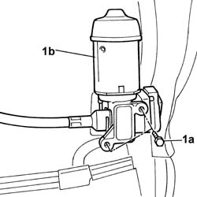
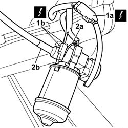

7045J42 Front seat head restraint adjustment motor, left or right - R.R. after electric circuit check
- Path
- Procedures > 70 FITTINGS > 7045 FRONT SEATS > 7045J FRONT SEAT MOVEMENT > 7045J42 Front seat head restraint adjustment motor, left or right - R.R. after electric circuit check
- Kind
- repair procedure (removal / refitting; the operation number is the code)
- Applies to
- all engines; all production periods
- Interactive page
- https://sloeber94.github.io/elrnDB-lThss/en/#/194847
Applies to: all engines; all production periods
 Removing
Removing
 Refitting
Refitting- Disconnect the negative battery terminal.
See in Op. 7045A10 FRONT SEAT (one) left or right - R.R.
See in Op. 7045J10 switch unit for movement of one front seat, l/h or r/h - r+r for check
See in Op. 7045A42 Front seat GUARD (one), left or right - R.R.
- < R1 > [all the elements]
See in Op. 7045A98 Front seat rear pouch panel, left or right - R.R.
See in Op. 7045A38 DEVICE for LUMBAR ADJUSTMENT of driver's seat backrest - R.R. with seat removed
1. Undo the fixing bolts (1a) and remove the electric motor (1b) from the housing.

Applies to: all engines; all production periods
1. Rotate the electric motor and disconnect the electrical connectors (1a) and (1b).
2. Release the retaining spring (2a) and disconnect the head restraint movment flexible cable (2b), electric motor side.

Applies to: all engines; all production periods
Refitting
Removing- Connect the head restraint movement flexible cable, electric motor side, and secure it using the retaining spring.
- Connect the head restraint movement electric motor electrical connectors.
- Connect the negative battery terminal.
- Check the operation of the motor
- Place the electric motor in position and secure it using the bolts.
See in Op. 7045A38 DEVICE for LUMBAR ADJUSTMENT of driver's seat backrest - R.R. with seat removed
See in Op. 7045A98 Front seat rear pouch panel, left or right - R.R.
See in Op. 7045A42 Front seat GUARD (one), left or right - R.R.
- < R1 > [all the elements]
See in Op. 7045J10 switch unit for movement of one front seat, l/h or r/h - r+r for check
See in Op. 7045A10 FRONT SEAT (one) left or right - R.R.
- Connect the negative battery terminal.
Topics linked from this page (5)
- 7045A10 FRONT SEAT (one) left or right - R.R.
- 7045A38 DEVICE for LUMBAR ADJUSTMENT of driver's seat backrest - R.R. with seat removed
- 7045A42 Front seat GUARD (one), left or right - R.R.
- 7045A98 Front seat rear pouch panel, left or right - R.R.
- 7045J10 switch unit for movement of one front seat, l/h or r/h - r+r for check